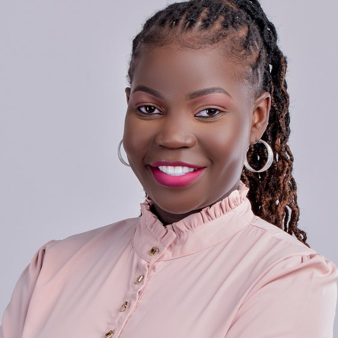

Research Scientist · Nairobi, Kenya
Millicent Ochieng
Research Scientist, Microsoft Research Africa
PhD researcher in Computer Science, Wits University
I build and evaluate multilingual AI systems — the tokenization, alignment and benchmarking methods that decide whether language models actually work for African users, not just whether they score well.

What I work on
Research & engineering
I work end to end — from tokenizer internals and evaluation pipelines to human-centered fieldwork with the communities a model is meant to serve.
Tokenization & LLM efficiency
Improving how models segment text so under-represented languages are encoded fairly — and run cheaper.
Multicultural alignment
Measuring how models capture cultural variation across communities, using human-centered evaluation.
Benchmarks & evaluation
Building the datasets and harnesses that make progress on low-resource languages measurable.
Selected work
Publications
Peer-reviewed work at EMNLP, NAACL, LREC and ACL. See all 11 →
-
EMNLP2026
Toward Cultural Alignment: Human-Centered Evaluation of Multimodal AI Stories Across Five African Communities
-
NAACL2025
IrokoBench: A New Benchmark for African Languages in the Age of Large Language Models
★ Outstanding Paper Award, NAACL 2025 -
ACL·W2024
-
NAACL2024
-
EMNLP2023
Recognition
Awards & fellowships
- 2026Schlumberger Foundation Faculty for the Future FellowshipCompetitive fellowship for women from low- and middle-income countries in STEM
- 2026WiDS High Impact Ambassador, WiDS WorldwideSustained leadership advancing women in data science and AI
- 2025Outstanding Paper Award — IrokoBench, NAACL 2025Outstanding contribution in multilingual and African language NLP
- 2019IUCEA Masters ScholarshipAwarded as the top candidate in Kenya
Beyond the lab
Community & service
WiDS Kenya
Leading a 400+ member community advancing gender diversity in data science, and serving on the WiDS Worldwide Ambassador Advisory Council.
AfricaNLP
Workshop Organizer & Communications Chair, co-organizing AfricaNLP at EACL 2026.
Masakhane
Advancing multilingual NLP research for low-resource African languages. Also an ACL reviewer since 2023.
Work with me
Does your AI actually work for African users?
I help teams evaluate and improve multilingual systems — benchmarking, cultural alignment audits, and advisory work grounded in peer-reviewed methods.